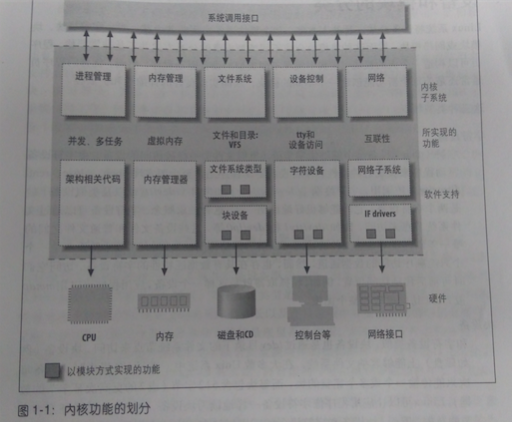
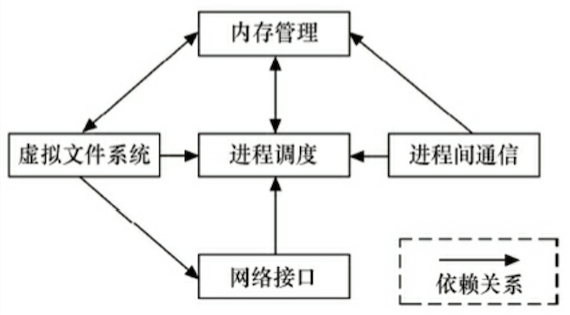
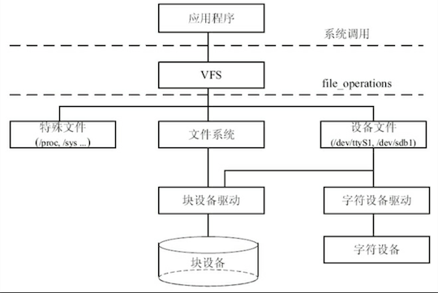

Linux 内核
内核划分

内核的组成部分

内核源代码目录结构
| 目录、文件 | 说明 |
|---|---|
| Documentation/ | 内核各部分的通用解释和注释 |
| arch/ | 和硬件体系结构相关 |
| block/ | 块设备驱动程序 I/O 调度 |
| certs/ | |
| crypto/ | 常用加密和散列算法（如 AES 、 SHA 等），还有一些压缩和 CRC 校验算法 |
| drivers/ | 设备驱动程序 |
| firmware/ | |
| fs/ | 支持的各种文件系统 |
| include/ | 头文件 |
| init/ | 内核初始化代码 |
| ipc/ | 进程间通信代码 |
| kernel/ | 内核部分，包括进程调度、定时器等，而和平台相关的部分在 arch/*/kernel/ |
| lib/ | 库文件 |
| mm/ | 内存管理，和平台相关部分在 arch/*/mm/ |
| net/ | 网络相关，实现各种网络协议 |
| samples/ | |
| scripts/ | 用于配置内核的脚本文件 |
| security/ | 主要是 SELinx 模块 |
| sound/ | ALSA 、OSS 音频设备驱动核心代码和常用设备驱动 |
| tools/ | |
| usr/ | 实现用于打包和压缩的 cpio 等 |
| virt/ | |
| COPYING | |
| CREDITS | |
| Kbuild | 内核的编译系统 |
| Kconfig | 给用户提供配置选择的功能 |
| MAINTAINERS | |
| Makefile | 定义 Linux 内核编译规则 |
| README | |
| REPORTING-BUGS |
内核的编译
推荐 make menuconfig
- Makefile
- 配置文件（Kconfig）
- 配置工具
文件系统目录结构
Linux 根目录（即 “/”）
| 目录 | 说明 |
|---|---|
| /bin | 基本明命令， ls、cp、mkdir 等 |
| /sbin | 系统命令，mod probe、hwclock、ifconfig 等 |
| /dev | 设备文件存储目录 |
| /etc | 系统配置文件 |
| /lib | 系统库文件存放 |
| /mnt | 挂载存储设备等挂载目录 |
| /opt | 有些软件包安装位置 |
| /proc | 操作系统运行时，进程及内核信息存放。伪文件系统 proc 挂载目录，存在于内存 |
| /tmp | 临时文件 |
| /usr | 存放程序目录，如用户命令、用户库等 |
| /var | 存放系统日志等 |
| /sys | sysfs 文件系统映射目录 |
文件系统与设备驱动

udev 用户空间设备管理
- 设备和驱动分离，并通过总线进行匹配。
- udev 利用内核通过 netlink 发出的 uevent 信息动态创建设备文件节点
| 设备管理 | 说明 |
|---|---|
| udev | |
| mdev | udev 轻量级版本，集成于 busybox 中 |
| vold | Android 采用 |